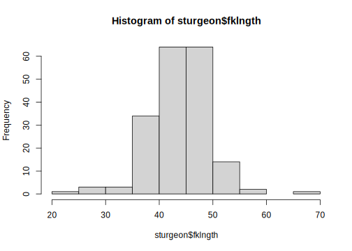
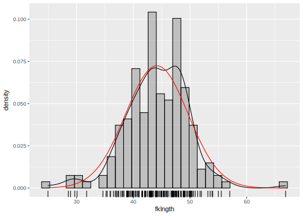
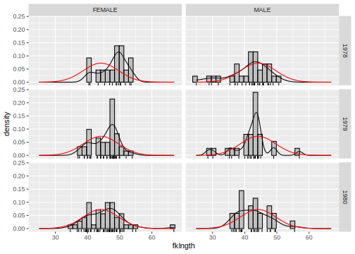
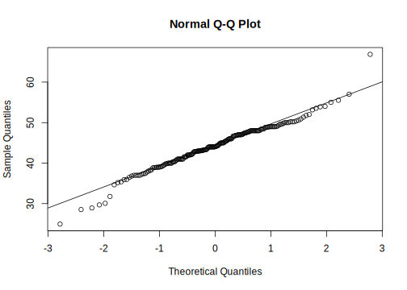
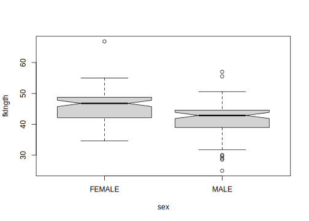
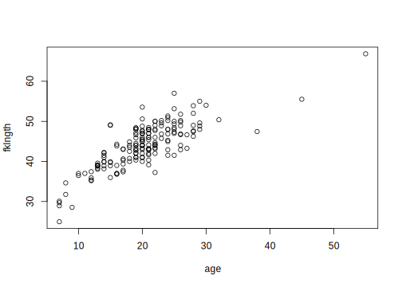
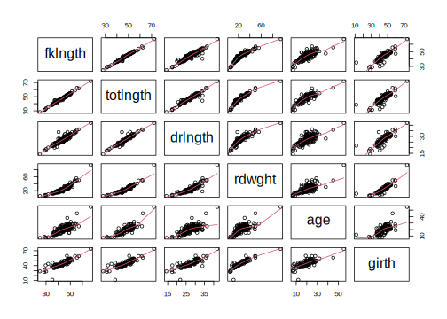

1.5 Gérer les données
1.5.1 Importer et exporter des données
Il existe de multiple format four sauvegarder les données, les 2 plus utiles sont .csv et .Rdata.
Les fichiers .csv sont utilisés pour stocker des données.
Ils sont ouvrables par les éditeurs de texte (e.g. Word, Writer, atom, …) et les tableurs (e.g. MS Excel, LO Calc).
Ils sont lus avec la fonction read.csv et créés avec write.csv.
Les fichiers .Rdata sont utilisés pour stocker n’importe quel objet R pas uniquement des données.
Cependant, ces fichiers ne peuvent être lus et utilisés que par R.
Ces fichiers sont lus avec la fonction load et créés avec la fonction save.
Les données pour les exercices de laboratoire et pour les devoirs vous sont fournies en format .csv.
1.5.1.1 Répertoire de travail
Un message d’erreur typique est:
Error in file(file, "rt") : cannot open the connection
In addition: Warning message:
In file(file, "rt") :
cannot open file 'ou_est_mon_fichier.csv': No such file or directoryL’erreur est du au fait que R ne sache pas où trouver le fichier. Par défaut lorsqu’on ouvre R, R utilise le dossier utilisateur sur l’ordinateur comme dossier de travail. Cela signifie que R va cherhcer à lire les fichiers dans ce dossier et écrire les nouveaux fichiers dans ce dossier. Ceci n’est pas toujours pratique surtout lorsque l’on débute avec R. Pour lire/écrire un fichier dans un endroit particulier sur l’ordinateur, il faut spécifier à R le chemin de cet endroit. Cela peut ce faire de 3 manières différentes:
- avec la fonction
file.choose(). La fonction ouvrira une boîte de dialogue vous permettant d’aller choisir un fichier sur votre ordinateur. Si cette option semble très attirante de part sa simplicité, je ne recommande pas de s’en servir car elle ne permet pas de reproduire l’analyse facilement. En effet, elle nécessite de choisir le document chaque fois que l’on souhaite l’utiliser. - en spécifiant le chemin complet du fichier dans la commande. Par example
"/home/julien/Documents/cours/BIO4558/labo/data/monfichier.csv". C’est assez long à taper et surtout cela ne permet pas de facilement utliser le code sur un autre ordinateur. - en spécifiant un répertoire de travail avec la fonction
setwd(). Ceci indique à R de chercher et d’écrire les fichiers dans un dossier en particulier. Le chemin des fichiers est toujours interprété de manière relative au répertoire de travail. Cela à l’avantage de pouvoir facilement utiliser le même code sur plusieurs ordinateur ssi la structure du dossier est la même.
POur connaitre le répertoire de travail de R il faut utiliser la fonction getwd(). La fonction setwd() permet de spécifier le chemin du dossier à utiliser comme répertoire de travail.
RStudio en double-cliquant sur un fichier .R alors Rstudio utlisera le dossier où ce fichier est présent comme répertoire de travail. Plutôt pratique car cela évite d’avoir à utiliser la fonction setwd().
data. Le code du labo est structuré de cette manière. C’est pourquoi tous les codes de chargement ou d’écriture de données seront du type data/mon_fichier.xxx.
1.5.1.2 Ouvrir un fichier de données en format .Rdata
Pour ouvrir ces fichiers, vous pouvez cliquer dessus et laisser votre système d’exploitation démarrer une nouvelle session de R ou encore, à partir de la console de R, utliser la fonction load avec le nom et le chemin du fichier de données.
Par example, pour ouvrir le fichier ErablesGatineau.Rdata qui se situe dans le dossier data du dossier de travail, il faut taper:
1.5.1.3 Ouvrir un fichier de données en format .csv
Pour importer ces données en format .csv dans R, il faut utiliser la commande read.csv().
Par exemple, pour créer un objet R erables qui contient les données du fichier ErablesGatineau.csv, il faut utiliser la commande suivant.
read.csv() appelée read.csv2() qui règle ce problème.
Googlez-la si vous en avez besoin.
Pour vérifier si les données ont bel et bien été lues, vous pouvez lister les objets en mémoire avec la fonction ls() ou en obtenir une liste avec une description plus détaillée avec ls.str().
ls.str() car elle peut produire des sorties extrèmementn longue si vous avez beaucoup d’objet dans l’environnement R. Je vous suggère donc d’utliser ls() et ensuite str() sur l’objet qui vous intéresse.
## [1] "anglais" "chien" "d" "d_nonsport"
## [5] "d_sport" "diplome" "erables" "hdv2003"
## [9] "imc" "maths" "p" "params"
## [13] "poids" "precipitations" "reg" "resultat"
## [17] "rp2012" "s" "sport" "tab"
## [21] "taille1" "taille2" "taille3" "taille4"
## [25] "taille5" "tailles" "tailles_m" "temperature"
## [29] "title" "x" "y"## 'data.frame': 100 obs. of 3 variables:
## $ station: chr "A" "A" "A" "A" ...
## $ diam : num 22.4 36.1 44.4 24.6 17.7 ...
## $ biom : num 732 1171 673 1552 504 ...R confirme avoir en mémoire l’objet erables.
erables est un tableau de données rectangulaire (data.frame) contenant 100 observations (lignes) de 3 variables (colonnes): station, une variable de type Facteur avec 2 niveaux, et diam et biom qui sont 2 variables numériques.
1.5.1.4 Entrer des données
R n’est pas un environnement idéal pour entrer des données. C’est possible, mais la syntaxe est lourde et peut inciter à s’arracher les cheveux. Utilisez votre chiffrier préféré pour faire l’entrée de données. Ce sera plus efficace et moins frustrant.
1.5.1.5 Nettoyer/corriger des données
Une autre opération qui peut être frustrante en R. Mon conseil : ne le faites pas là. Retournez au fichier original, faites la correction, puis re-exportez les données vers R. Il est finalement plus simple de refaire exécuter les quelques lignes de code par la machine. Vous aurez à la fin une seule version (corrigée) de vos données et un code qui vous permet de refaire votre analyse.
1.5.1.6 Exporter des données à partir de R.
Vous pouvez utiliser la fonction,
où mydata est le nom du base de données à exporter et outfilename.csv est le nom du fichier à produire.
Notez que ce fichier sera créé dans le répertoire de travail (qui peut être changé par le menu à File>Change dir, ou par la commande setwd())
1.5.2 Examen préliminaire des données
La première étape de toute analyse est l’examen des données.
Elle nous permet de découvrir si on a bien importé les données, si les nombres enregistrés sont possibles, si toutes les données ont bien été lues, etc.
L’examen préliminaire des données permet souvent aussi d’identifier des observations suspectes, possiblement dûes à des erreurs d’entrée de donnée.
Finalement, l’examen graphique préliminaire permet en général de visualiser les tendances principales qui seront confirmées par l’analyse statistique en tant que telle.
Le fichier sturgeon.csv contient les données d’une étude effectuée sur les esturgeons de la rivière Saskatchewan.
Ces données ont été récoltées, entre autres, pour examiner comment la taille des esturgeons varie entre les sexes (sex), les sites (location), et les années (year).
- Chargez les données du fichier
sturgeon.csvdans un objetsturgeon. - Pour obtenir un aperçu des éléments du fichier qui ont été chargés en mémoire, taper la commande
str(sturgeon).
## 'data.frame': 186 obs. of 9 variables:
## $ fklngth : num 37 50.2 28.9 50.2 45.6 ...
## $ totlngth: num 40.7 54.1 31.3 53.1 49.5 ...
## $ drlngth : num 23.6 31.5 17.3 32.3 32.1 ...
## $ rdwght : num 15.95 NA 6.49 NA 29.92 ...
## $ age : int 11 24 7 23 20 23 20 7 23 19 ...
## $ girth : num 40.5 53.5 31 52.5 50 54.2 48 28.5 44 39 ...
## $ sex : chr "MALE" "FEMALE" "MALE" "FEMALE" ...
## $ location: chr "THE_PAS" "THE_PAS" "THE_PAS" "THE_PAS" ...
## $ year : int 1978 1978 1978 1978 1978 1978 1978 1978 1978 1978 ...1.5.2.1 Sommaire statistique
Pour un sommaire du contenu du base de données appelé sturgeon qui est en mémoire, taper la commande
## fklngth totlngth drlngth rdwght
## Min. :24.96 Min. :28.15 Min. :14.33 Min. : 4.73
## 1st Qu.:41.00 1st Qu.:43.66 1st Qu.:25.00 1st Qu.:18.09
## Median :44.06 Median :47.32 Median :27.00 Median :23.10
## Mean :44.15 Mean :47.45 Mean :27.29 Mean :24.87
## 3rd Qu.:48.00 3rd Qu.:51.97 3rd Qu.:29.72 3rd Qu.:30.27
## Max. :66.85 Max. :72.05 Max. :41.93 Max. :93.72
## NA's :85 NA's :13 NA's :4
## age girth sex location
## Min. : 7.00 Min. :11.50 Length:186 Length:186
## 1st Qu.:17.00 1st Qu.:40.00 Class :character Class :character
## Median :20.00 Median :44.00 Mode :character Mode :character
## Mean :20.24 Mean :44.33
## 3rd Qu.:23.50 3rd Qu.:48.80
## Max. :55.00 Max. :73.70
## NA's :11 NA's :85
## year
## Min. :1978
## 1st Qu.:1979
## Median :1979
## Mean :1979
## 3rd Qu.:1980
## Max. :1980
## Pour chaque variable, R donne le minimum, le maximum, la médiane qui est la valeur au milieu de la liste des observations ordonnées (appelée le 50 ième percentile), ici, la 93 ième valeur des 186 observations, les valeurs au premier (25%) et troisième quartile (75%), et si il y a des valeurs manquantes dans la colonne. Notez que plusieurs des variables ont des observations manquantes (NA). Donc, seules les variables fklngth (longueur à la fourche), sex, location et year ont 186 observations.
1.5.2.2 Histogramme, densité de probabilité empirique, boxplot et examen visuel de la normalité
Examinons maintenant de plus près la distribution de fklngth.
La commande hist() permet de tracer un histogramme de la variable fklngth dans le base de données sturgeon.

Les données semblent suivre approximativement une distribution normale.
sturgeon$ devant chaque nom de variable.
On pourrait se faciliter la tâche en utilisant la commande attach() mais cela est fortement déconseillé et jamais utilisé dans ce document.
Cet histogramme est la représentation classique.
Mais les histogrammes ne sont pas parfaits.
Leur forme dépend en partie du nombre de catégories utilisées, surtout pour les petits échantillons.
On peut faire mieux, particulièrement si on est intéressé à comparer visuellement la distribution des observations à une distribution normale.
Mais il faut programmer un peu (ou savoir copier-coller…).
Le code suivant est un histogramme fait avec l’extension ggplot2.
## Chargez l'extension ggplot si besoin
library(ggplot2)
## créer un graphique `mygraph` utilisant les données de "sturgeon"
## et définir l'axe des X comme la longueur `fklngth`
mygraph <- ggplot(data = sturgeon, aes(x = fklngth))
## ajouter différentes parties au graphique
mygraph <- mygraph +
## histogramme semi-transparent
geom_histogram(aes(y = ..density..), bins = 30, color = "black", alpha = 0.3) +
## line de densité
geom_density() +
## localisation des observations
geom_rug() +
## courbe de distribution normale approximé au données
stat_function(fun = dnorm,
args = list(
mean = mean(sturgeon$fklngth),
sd = sd(sturgeon$fklngth)),
color = "red")
## montrer le graphique
mygraph
Chaque observation est représentée par une barre sous l’axe des x (rug). En rouge est la distribution normale de données avec la même moyenne et écart-type que les observations. Et l’autre ligne est la densité de probabilité empirique, « lissée » à partir des observations. Si vous êtes plus aventureux, vous pouvez examiner la distribution des observations de fklngth par sous-groupes (par exemple sex et year) avec :

Chaque panneau illustre la distribution pour un sexe cette année-là, et la courbe en rouge récurrente représente la distribution normale pour l’ensemble des données.
Cette courbe peut servir à mieux évaluer visuellement les différences entre les panneaux.
Une autre façon d’évaluer la normalité de données visuellement est de faire un QQ plot avec la paire de commandes qqnorm() et qqline().

Des données parfaitement normales suivraient la ligne droite diagonale.
Ici, il y a des déviations dans les queues de la distribution, et un peu à droite du centre.
Comparez cette représentation à celle des deux graphiques précédents.
Vous conviendrez sans doute avec moi qu’il est plus facile de visualiser comment la distribution dévie de la normalité sur les histogrammes et les graphiques de la densité empirique de probabilité que sur les QQ plots.
Ceci dit, les QQ plots sont souvent utilisés et vous devriez être capable de les interpréter.
De plus, on peut facilement éprouver statistiquement l’hypothèse que les données sont distribuées normalement avec R par la commande shapiro.test() qui calcule une statistique (W) qui est une mesure de la tendance des points d’un QQ plot à former une ligne parfaite.
Si oui, alors W=1.
Si W s’éloigne de 1 (vers 0), alors les données s’éloignent de la normalité.
Ici,
##
## Shapiro-Wilk normality test
##
## data: sturgeon$fklngth
## W = 0.97225, p-value = 0.0009285W n’est pas très loin de 1, mais suffisamment pour que la différence soit significative.
L’examen visuel des grands échantillons est souvent compliqué par le fait que plusieurs points se superposent et qu’il devient plus difficile de bien visualiser la tendance centrale.
Les boxplots avec “moustaches” (box and whiskers plots) offrent une alternative intéressante.
La commande boxplot() peut produire un boxplot de fklngth pour chaque niveau de sex, et ajoute les coches.

La ligne un peu plus épaisse dans la boîte de la Figure indique la médiane. La coche est proportionnelle à l’incertitude quant à la position de la médiane. On peut visuellement interpréter approximativement les différences entre médianes en examinant si il y a chevauchement entre les coches (ici, il n’y a pas chevauchement, et on conclurait provisoirement que la médiane de fklngth pour les femelles est supérieure à celle des mâles). Les boîtes s’étendent du premier au troisième quartile (du 25ième au 75ième percentile si vous préférez), Les barres (moustaches ou whiskers) au-dessus et en dessous des boîtes s’étendent soit de la valeur minimum à la valeur maximum, ou, si il y a des valeurs extrêmes, de la plus petite à la plus grande valeur à l’intérieur de 1.5x la largeur de l’étendue interquartile . Enfin, les observations qui excèdent les limites des moustaches (donc à plus de 1.5x l’étendue interquartile de chaque côté de la médiane) sont indiquées par des symboles.Ce sont des valeurs qui pourraient être considérées comme extrêmes et possiblement aberrantes.
1.5.2.3 Diagrammes de dispersion bivariés
En plus des graphiques pour chacune des variables séparément, il est très souvent intéressant de jeter un coup d’oeil aux diagrammes de dispersion .
La commande plot(y~x) permet de faire le graphique de y sur l’axe vertical (l’ordonnée) en fonction de x sur l’axe horizontal (l’abscisse).
Vous devriez obtenir:

R a une fonction qui permet la création des graphiques de dispersion de toutes les paires de variables (pairs()).
Une des option de ¬ est l’ajout d’une trace lowess qui indique la tendance de la relation entre les variables.
Pour obtenir la matrice de ces graphiques avec la trace lowess pour toutes les variable dans sturgeon, entrer la commande pairs(sturgeon[,1:6], panel=panel.smooth) et vous devriez obtenir

1.5.3 Créer des sous-ensembles de cas
Il arrive fréquemment qu’une analyse se concentre sur un sous-ensemble des observations contenues dans un fichier de données.
Les cas sont d’habitude sélectionnés selon un critère en particulier.
Pour utiliser un sous-ensemble de vos données en créant un graphique ou en performant une analyse, on peut utiliser la commande subset().
Par exemple, pour créer un sous ensemble des données du tableau sturgeon qui ne contient que les femelles capturées en 1978, on peut écrire :
## fklngth totlngth drlngth rdwght age girth sex location year
## 2 50.19685 54.13386 31.49606 NA 24 53.5 FEMALE THE_PAS 1978
## 4 50.19685 53.14961 32.28346 NA 23 52.5 FEMALE THE_PAS 1978
## 6 49.60630 53.93701 31.10236 35.86 23 54.2 FEMALE THE_PAS 1978
## 7 47.71654 51.37795 33.97638 33.88 20 48.0 FEMALE THE_PAS 1978
## 15 48.89764 53.93701 29.92126 35.86 23 52.5 FEMALE THE_PAS 1978
## 105 46.85039 NA 28.34646 23.90 24 NA FEMALE CUMBERLAND 1978
## 106 40.74803 NA 24.80315 17.50 18 NA FEMALE CUMBERLAND 1978
## 107 40.35433 NA 25.59055 20.90 21 NA FEMALE CUMBERLAND 1978
## 109 43.30709 NA 27.95276 24.10 19 NA FEMALE CUMBERLAND 1978
## 113 53.54331 NA 33.85827 48.90 20 NA FEMALE CUMBERLAND 1978
## 114 51.77165 NA 31.49606 35.30 26 NA FEMALE CUMBERLAND 1978
## 116 45.27559 NA 26.57480 23.70 24 NA FEMALE CUMBERLAND 1978
## 118 53.14961 NA 32.67717 45.30 25 NA FEMALE CUMBERLAND 1978
## 119 50.19685 NA 32.08661 33.90 26 NA FEMALE CUMBERLAND 1978
## 123 49.01575 NA 29.13386 37.50 22 NA FEMALE CUMBERLAND 1978== pour égal à.
Dans ce contexte, si vous utilisez = seulement, vous n’obtiendrez pas ce que vous désirez.
Dans le tableau qui suit se trouve une liste de commandes communes que vous allez probablement utiliser pour créer des expressions en R.
| Operateur | Explication | Operateur | Explication |
|---|---|---|---|
| == | Égal à | != | Pas égal à |
| > | Plus que | < | Moins que |
| >= | Plus que ou égal à | <= | Moins que ou égal à |
| & | Et vectorisé | | | Ou vectorisé |
| && | Et contrôle | || | Ou contrôle |
| ! | Pas |
subset() et hist(), essayez de faire un histogramme pour le sous-ensemble de cas correspondant aux femelles capturées en 1979 et 1980 (donc sex == "FEMALE" & (year == "1979" | year == "1980"))
1.5.4 Transformations de données
Il est très fréquemment nécessaire d’effectuer des transformations mathématiques sur les données brutes pour mieux satisfaire aux conditions d’application de tests statistiques. R étant aussi un langage de programmation complet, il peut donc effectuer les transformations désirées. Les fonctions les plus fréquemment utilisées sont:
log()sqrt()ifelse()
On peut employer ces fonctions directement dans les lignes de commandes, ou encore créer de nouvelles variables orphelines ou faisant partie d’un data.frame. Par exemple, pour faire un graphique du logarithme décimal de fklngth en fonction de l’âge, on peut écrire
Pour créer une variable orpheline (i.e. non incluse dans le data.frame) appelée logfklngth et contenant le logarithme décimal de fklngth, on peut écrire
Si on veut ajouter cette variable transformée à un tableau de données (data.frame), alors, on doit préfixer le nom de la variable par le nom du base de données et du symbole $, par exemple, pour ajouter une variable nommée lfkl contenant le log10 de fklngth au tableau sturgeon, on peut écrire:
N’oubliez pas de sauvegarder ce tableau modifié si vous voulez avoir accès à cette nouvelle variable dans le futur.
Pour les transformations conditionnelles, on peut utiliser la fonction ifelse().
Par exemple, pour créer une nouvelle variable appelée dummy qui sera égale à 1 pour les mâles et 0 pour les femelles, on peut écrire:
1.5.5 Exercice sur R
Vous trouverez dans le fichier salmonella.csv, des valeurs numériques du ratio d’infection des cellules par la salmonelle dans deux milieux (IN VITRO et IN VIVO) et pour trois souches différentes de salmonelles.
Examinez les données pour le ratio et faites des graphiques pour évaluer la normalité de la distribution des ratios pour la souche SAUVAGE dans les 2 milieux combinés et produire un graphique.
## Charger les données
salmonella <- read.csv("data/salmonella.csv")
##creer le graph en utilisant juste la souche sauvage et définir x
mygraph <- ggplot(subset(salmonella, souche == "SAUVAGE"), aes(x = ratio))
##ajouter des composants graphiques
mygraph <- mygraph +
# line densité
geom_density() +
# position des observations
geom_rug() +
# histogramme
geom_histogram(aes(y = ..density..),
bins = 30,
color = "black",
alpha = 0.3) +
# distribution normal ajustée
stat_function(fun = dnorm,
args = list(
mean = mean(subset(salmonella, souche == "SAUVAGE")$ratio),
sd = sd(subset(salmonella, souche == "SAUVAGE")$ratio)
),
color = "red")
## faire le graphique
mygraphFigure 1.22: Distibution des ratios d’infections par la souche sauvage de salmonelle